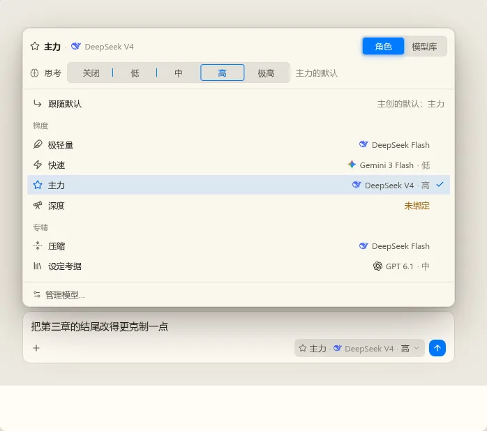
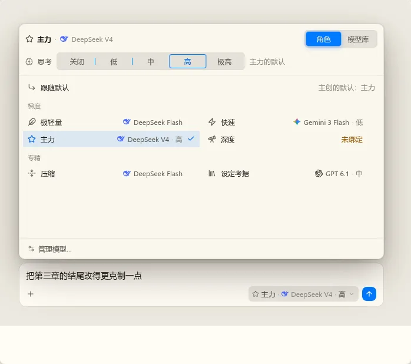
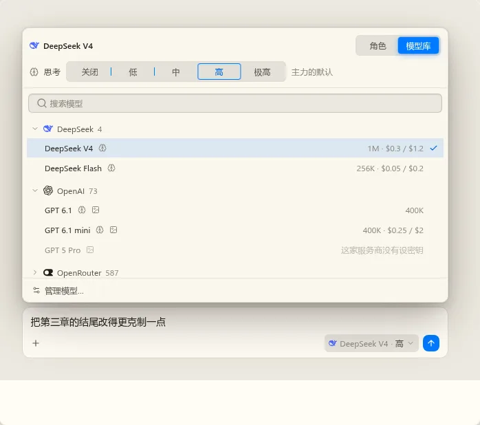
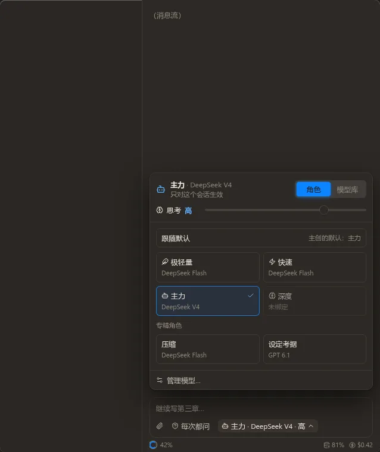
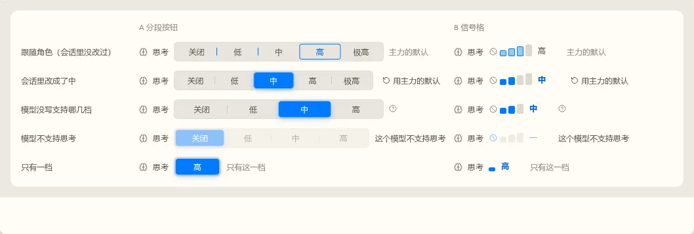
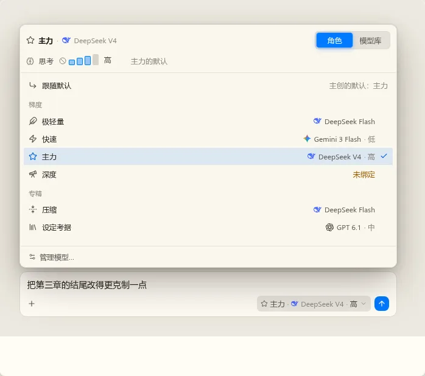
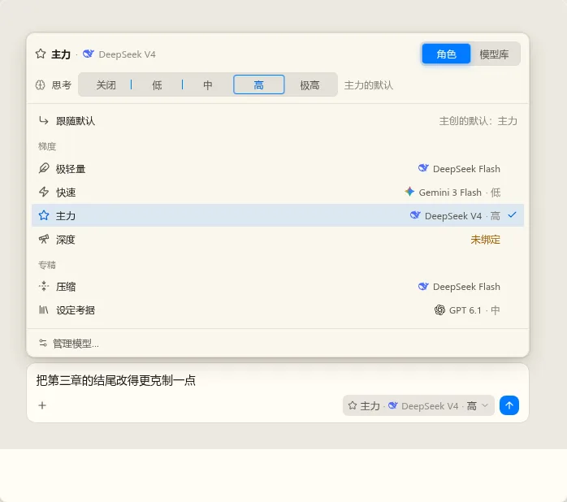
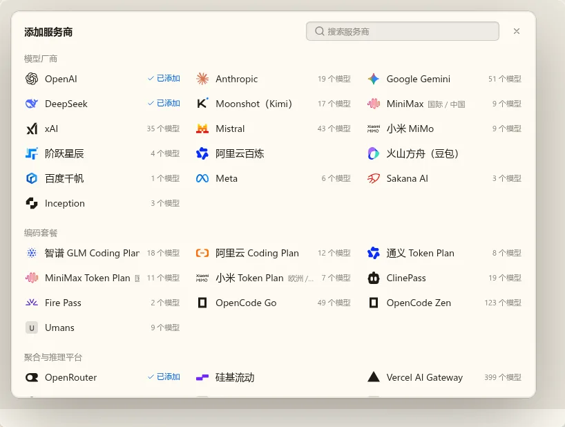
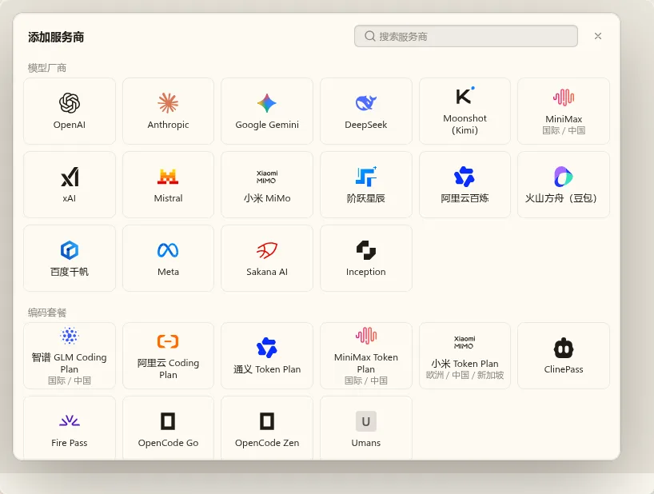
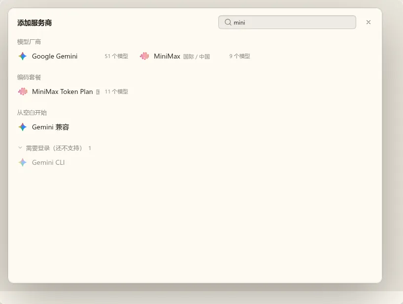

第 1 轮：模型选择器与添加服务商
选择器里的角色排成一列还是两列？
推荐 A 一列：角色名和绑定的模型、档位在一行里对齐好扫；输入框窄时两列的模型名会被截掉，自建专精角色多了也只是往下长。
A 一列紧凑行

B 两列紧凑行



思考档用分段按钮还是信号格？
推荐 A 分段按钮：档位名都看得见，点一下就是那一档；信号格要悬停才知道每格是哪档，只有右边一个字。

A 分段按钮

B 信号格

阴影是整档调轻，还是只换选择器？
推荐 A 整档调轻：重的是气泡这一档本身（最远一层模糊 80 像素），同一档还有约 20 处（编辑器的选区菜单、批注卡片、人物选择等）；规范不许组件自己改投影。
A 气泡这档整体改轻

B 只换选择器
选择器的样子与 A 相同；其它气泡保持现在的重投影（下图）。

“添加服务商”用多列的行还是方块？
推荐 A 多列的行：79 家加我们补的十来家，行比方块密一倍，一屏能看到两组；长名字（Cloudflare AI Gateway、智谱 GLM Coding Plan）在方块里要折行。
A 分组、组内三列的行

B 分组、组内方块


直接做，不用答
| 哪里 | 改成什么 |
|---|---|
| 输入框上的触发器 | 角色图标、角色名、服务商图标、模型、思考档；跟随角色的档是灰字，会话里改过的是强调色 |
| 思考档的来源 | 跟随角色时控件画成描边（还没在会话里定），改过以后实心，旁边出现“用主力的默认” |
| 模型不支持思考、没写档位、只有一档 | 不再隐藏：分别停用并写原因、给通用四档加“?”说明、显示成固定的一档 |
| “跟随默认” | 右边写出默认是哪个角色（t28 的稿里有，实现漏了） |
| 角色图标 | 内置角色各有一个（极轻量羽毛、快速闪电、主力星、深度望远镜、压缩折叠）；自建角色在角色页挑 |
| “只对这个会话生效”那行小字 | 去掉（设计语言不让常驻说明） |
| 模型库 | 按服务商分组、带图标与个数；几百个模型的服务商默认收起，搜索时只渲染命中的 |
| 已添加的模板 | 标“已添加”但不停用：服务商是模板的复制，同一个模板可以建第二个（例如两把 OpenRouter 密钥） |
| 只能登录的服务商 | 收进最后一组“需要登录（还不支持）”，默认收起 |
| 分组与模板 | OMP 目录没有分类，分组表由我们维护，查不到的归“其它”；补上 OMP 没有的 Anthropic（密钥）、阿里云百炼、火山方舟、硅基流动、Ollama、LM Studio，地址与协议在第 2 轮核对 |
| 没有图标的服务商 | 首字母方块（中性底色，不按名字配色） |
已定
- 服务商只有一种：都从模板复制，名称、协议、地址、图标都能改
- 添加后加入全部对话模型，几百个也加；设置里只记移除和改过的
- 在线目录默认开，给“自动更新模型目录”开关
- 图标用 @lobehub/icons-static-svg；自定义支持上传与首字母方块
- 代理：应用级在“网络”分区、服务商级在“高级”；跟随系统、自定义、直连
- 思考档：会话里选的 > 角色上设的 > 模型默认；控件不再隐藏
- 协议检测照 Magpie 并行发四种极小请求